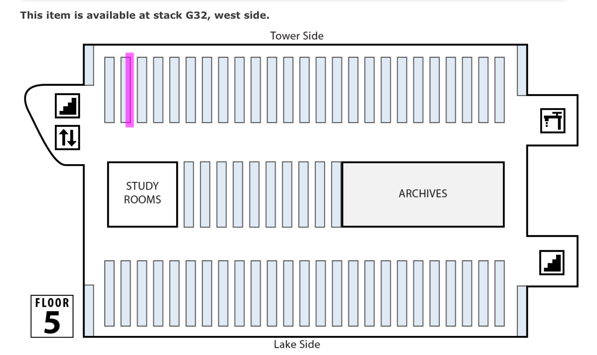

As online access to library resources has become the norm, the ability to find items in a library's stacks using a call number seems to be on the decline among students. In order to address this problem, Ithaca College Library has implemented a tool in our discovery system to assist students by displaying a map indicating the location of each physical library item.
